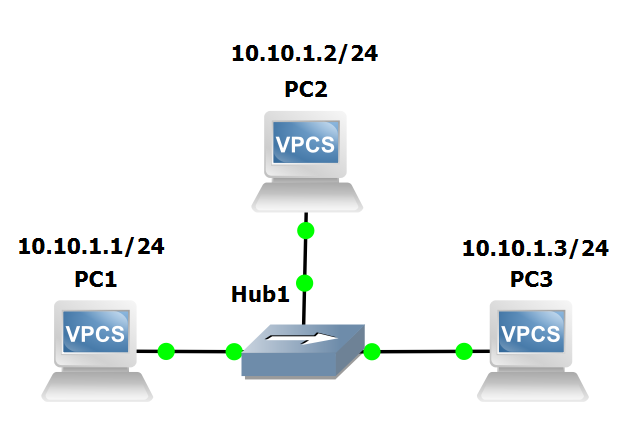
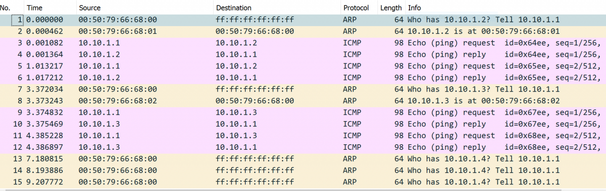

Lab #1
LAN: hub
The purpose of this lab is to show how IP and ARP work in a LAN context based on a hub device.
The lab also shows that the hub retransmits Ethernet frames out of its own ports.
Compare this lab with Lab #8 to understand the difference between hubs and switches.
Experiment steps
- Recreate the following topology in GNS3.

- Start all devices.
- Assign IP addresses to PC1, PC2 and PC3 as in the picture above.
- Start capture on link connecting Hub1 to PC3.
Traffic generation
Open PC1 terminal and execute the following commands:
ping 10.10.1.2 -c 2
ping 10.10.1.3 -c 2
ping 10.10.1.4 -c 2
Expected output in PC1 terminal
The ping command from PC1 towards PC2 (10.10.1.2) and PC3 (10.10.1.3) should succeed.
The ping from PC1 towards the unassigned IP address 10.10.1.4 should produce an error message.
Packet capture analysis
The picture below shows the packets captured by Wireshark on the link connecting Hub1 to PC3.

Notice that:
- packets between PC1 and PC2 are also transmitted on the link connecting PC3 to the hub, hence, they are captured by Wireshark;
- PC1, before transmitting an ICMP echo request to PC2 [frame #3], needs to learn PC2's MAC address by issuing a broadcast ARP request (Who has 10.10.1.2? Tell 10.10.1.1) [frame #1];
- PC1 learns that the 10.10.1.2 IP address is associated to the 00:50:79:66:68:01 MAC address through PC2's ARP reply [frame #2];
- PC2, instead, can directly send an ICMP echo reply to PC1 [frame #4], as it learned PC1's MAC address directly from the previous ARP request;
- likewise, PC1, before transmitting an ICMP echo request to PC3 [frame #9], needs to learn PC3's MAC address by issuing a broadcast ARP request (Who has 10.10.1.2? Tell 10.10.1.1) [frame #7]
- PC1 learns that the 10.10.1.3 IP address is associated to the 00:50:79:66:68:02 MAC address through PC3's ARP reply [frame #8];
- PC3, instead, can directly send an ICMP echo reply to PC1 [frame #10], as it learned PC1's MAC address directly from the previous ARP request;
- finally, when PC1 pings the unassigned IP address 10.10.1.4, PC1 tries to discover the MAC address associated to the IP address 10.10.1.4 by issuing a broadcast ARP request (Who has 10.10.1.4? Tell 10.10.1.1) [frame #13]. After a 1 second timeout, PC1 sends the same ARP request a second and a third time. After the third try, not receiving any response, PC1 concludes that the address 10.10.1.4 is unreachable.
Return to list of labs
Copyright (c) 2024 - Roberto Canonico
Last updated: October 3, 2024 by Roberto Canonico